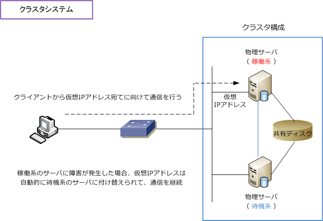
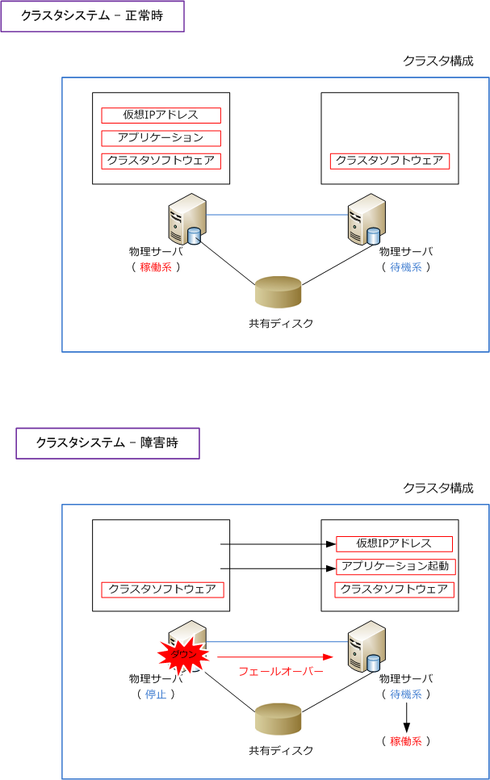
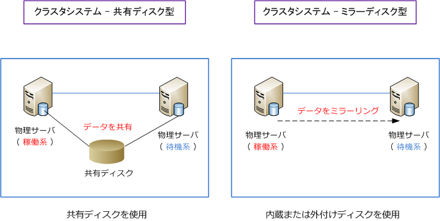

cluster system
クラスタシステムとは
クラスタシステムとは、複数のサーバをネットワークで接続して1つのシステムとして運用するシステム のことです。そのようなサーバの冗長システムを構築することをクラスタリングと言います。クラスタを 構成するために必要なソフトウェアは、サーバOSの機能の1つとして提供されていることから、複数台の サーバを用意するだけで、クラスタリングすることができます。
クラスタシステムでは、１台のサーバで障害が発生しても、別のサーバで通信を継続して処理できるので システム全体が停止することなく、障害復旧の交換作業中などの間もサービスを提供することができます。

HAクラスタソフト（クラスタソフトウェア）には、MicrosoftではMSFC（Microsoft Failover Cluster）や NECではCLUSTERPRO、富士通ではPRIMECLUSTERなどがあります。
クラスタシステム - 正常時と障害時
物理サーバのクラスタタイプでは、正常時はアクティブな稼働系に「仮想IPアドレスとアプリケーション」 が起動している状態であることから、クライアントからの通信は自動的に稼働系のサーバへと向かいます。
クラスタシステムでは、クラスタソフトウェアがサーバのハードウェアとアプリケーションのプロセスを 監視しています。クラスタソフトウェアがアクティブな稼働系のサーバに異常を検知した場合には自動的に 稼働系から待機系スタンバイのサーバにフェールオーバーします。アクティブな稼働系から、スタンバイの 待機系に処理を引き継ぐことをフェールオーバーと言います。

クラスタシステム - 共有ディスク型とミラーディスク型
HAクラスタ構成には共有ディスク型とミラーディスク型の大きく2種類があります。
共有ディスク型は、アクティブサーバとスタンバイサーバが共有するディスクを別途用意し、障害発生時の データの整合性を確保します。共有ディスク型は拡張性が高く、大規模なクラスタでも対応できる方式です。 また、データベースサーバなどデータの書き込み量の多いシステムで主に利用される方式です。
ミラーディスク型は、アクティブサーバとスタンバイサーバの2台のサーバのディスク間でミラーリングを 行うことで、障害発生時のデータの整合性を確保します。別途の共有ディスクの導入が必要がないことから システムを低価格で構築できるメリットのあり、小規模なシステムで主に採用される方式です。

クラスタシステム - ロードバランサの負荷分散システムとの違い
クラスタシステムも、ロードバランサの負荷分散システムも、複数のサーバに仮想IPアドレスを持たせて クライアントからのリクエストをアクティブなサーバが処理させるという点は同じであるし、冗長化された サーバのうちアクティブサーバに障害発生した場合に切り替えるという点でも同じであると言えます。
大きく異なる点は、クラスタシステムでは共有ディスクを実装できるという点です。共有ディスクを持つ ことでデータをリアルタイムに共有できて、複数のクライアントからデータが同時に更新された場合でも 同じ共有ディスクを参照することから、データの不整合が起きません。このことからクラスタシステムは、 主にデーターベースサーバ、ファイルサーバなどでよく利用される実装です。
ロードバランサによる負荷分散システムは、負荷分散対象のサーバの共有ディスクを持つことや書き込み はできません。一方、ロードバランサによる負荷分散システムではサーバ台数の拡張が容易に行える上に 多数のクライアントからの要求を振り分けを適切に行うことでき、静的な情報を提供するWebサーバ等の アプリケーションサーバでよく利用される実装です。